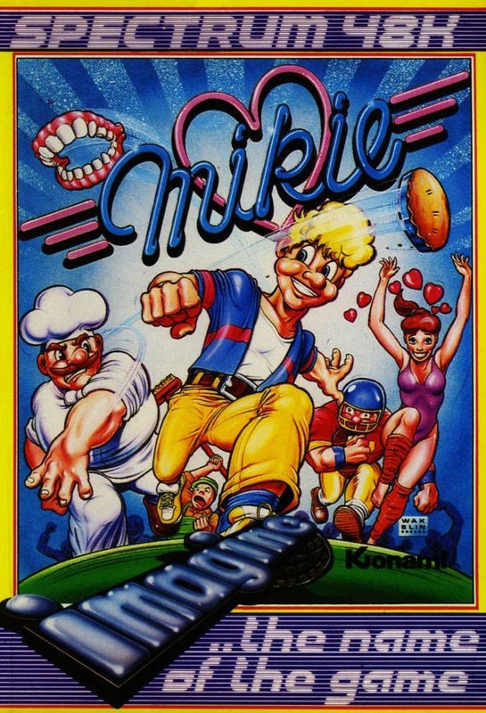
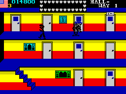
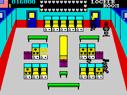

Mikie


{kind=link}

| Publisher: | Imagine |
| Price: | £7.95 |
| Year: | 1985 |
| Source: | CRASH, Issue 25 |

Mikie is the third in Imagine’s series of Konami arcade conversions. The game is set in a school and follows the antics of young Mikie, a teeny tearaway. This young devil has no respect for his teachers, and when he wants to do something he makes sure that he does it, no matter what stands in his way. Mikie has suddenly decided to take a message to his girlfriend, and rather than wait until dinner time he jumps up from his desk and makes a bee-line for the schoolyard, where he can find her.

The route to his beloved isn’t an easy one and Mikie has to go through five different rooms: the classroom; locker room; canteen, and gymnasium before he reaches the schoolyard. Mikie has to collect all the hearts scattered around each consecutive screen before he can move on to the next one. Each time he collects a heart, a letter is added to a message at the top of the screen. Bonus points are awarded for picking up a heart while it is flashing. Understandably, the staff of the school aren’t too keen on young tearaways running around the premises at will, and chase after him.
The game starts in the middle of a lesson. Mikie jumps up from his desk and has to collect all the hearts from under the seats of his classmates. They’re sitting on the hearts, and he has to bump people onto another seat with a swift nudge from his hips. When a desk is vacant the heart underneath can be collected by walking over it. His chums don’t seem to mind his antics, and move away without argument. One guy who does mind, however, is the teacher — he rushes after Mikie and tries to capture him. Mikie loses one of his lives if the teacher grabs him. Occasionally the teacher gets so frustrated that he hurls his false teeth at the delinquent — if they bite home, another life is lost.
If Mikie manages to collect all the hearts on a screen, the door unlocks and he can run out — or burst through the door, at least. All the rooms in the game lead into a hallway which is inhabited by a patrolling janitor, who is joined by teachers who come to his assistance in the chase. There are three landings in the hallway screen and lots of doors. The one leading to the next room is marked ‘in’. Mikie has to evade the patrolling adults and make his way to the right door — if he goes into the wrong room, he’ll meet with trouble....
After the classroom, comes the locker room, where Mikie is chased by a teacher, another janitor and the school cook as he tries to collect the hearts from lockers. The hearts are three to a locker, and to collect them Mikie has to face a locker and shout, once for each heart. If the chase proves to be a little too much, Mikie can collect a basketball and throw it at one of his pursuers — if it hits him, then he’ll bounce the ball for a while rather than follow Mikie.

After the locker room has been emptied of hearts, it’s back into the hallway and off to the canteen where hearts are littered over the floor. Mikie has to run over them to gather them up and there’s a group of three hearts on the table which have to be shouted at. Three cooks give Mikie hassle this time, although he can pick up chickens and throw them to the chefs, who abandon the chase while they eat.
Through the hallway again, Mikie reaches the penultimate screen, the gymnasium where the school’s cheerleaders are practising. Hearts are scattered over the floor and Mikie has to pick them up whilst making sure that he doesn’t bump into one of the dancing girls. Contact with a girl stuns Mikie for a while which allows the gym master to capture him.
If Mikie survives the cheerleaders and gym teacher, he can go on to the final screen, the schoolyard. Three caretakers make the going tough as Mikie scuttles round picking up the hearts from the playground floor. If he gets them all, he can go to the top of the screen and give his girlfriend a kiss and hand her his message.
After that it’s back to screen one, only this time there are more hearts to collect and the grown-ups are far more determined.
CRITICISM
‘Terrific! Right from the very start. Mikie is a professional, colourful, graphically brilliant, tuneful bonanza. A great loading screen is followed by an excellent rendition of the Beatle’s ‘A Hard Days Night’. Mikie doesn’t just look and sound good — it’s addictive and playable too. What more could a games player ask for? If Imagine continue to keep up this high standard of releases they’ll do very well. Buy this game — you’d have to be a pretty dull person not to like it.’
‘The sound on the title screen is just mega-fantastic, surely the best heard on a Spectrum with its brilliant drum effects and synthy sound. I was a bit disappointed, though — I went round all the screens on my second go! Still, there are some very nice touches, especially the behind the ‘wrong’ doors in the hallway, where I found loads of things — boxing gloves, big feet and even naked women (!?!). The way you can throw chickens and balls to your pursuers to keep them off your back for a while is very original, and can be used to great effect in sticky situations. If you’re spending money on games after Christmas check out Imagine’s latest releases....’
‘Yet another superb arcade conversion from Imagine, Mikie faithfully copies the arcade kiss em up and the result is a highly enjoyable and playable game. The big characters and bright, jolly backgrounds create an excellent atmosphere and make what is basically a very simple game something special. The sound is amazing, there’s no other word for it — I could hardly believe the excellent rendition of ‘A Hard Day’s Night’, combined with the excellent jingles during the game, it makes this the best sounding Spectrum game yet. If you like arcade games then you should have a look at this one. With its humorous gameplay and excellent touches Mikie really rises up from the mire of banal releases.’
COMMENTS
| Control keys: | Redefinable |
| Joystick: | Kempston, Cursor, Interface 2 |
| Keyboard play: | Very responsive |
| Use of colour: | Excellent |
| Graphics: | Big, bright and bold |
| Sound: | Amazing |
| Skill levels: | Increases with play |
| Screens: | Six |
| General rating: | Yet another first-rate Konami conversion |
| Use of computer: | 94% |
| Graphics: | 93% |
| Playability: | 94% |
| Getting started: | 91% |
| Addictive qualities: | 93% |
| Value for money: | 93% |
| Overall: | 93% |